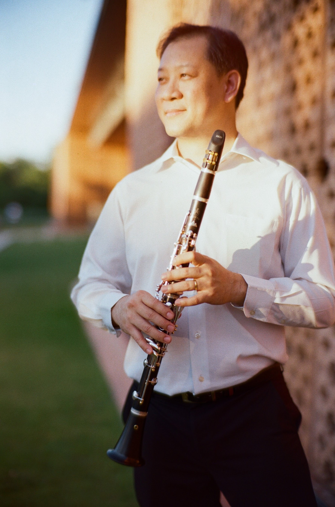
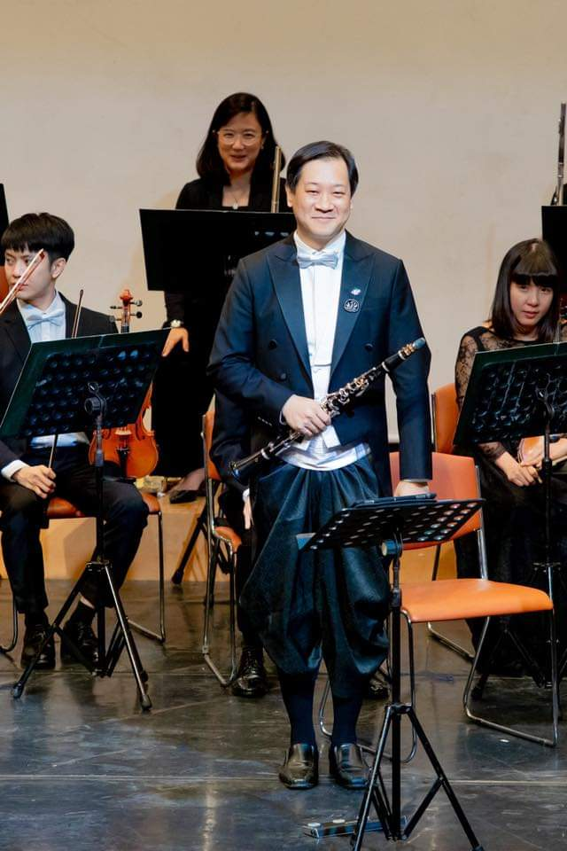
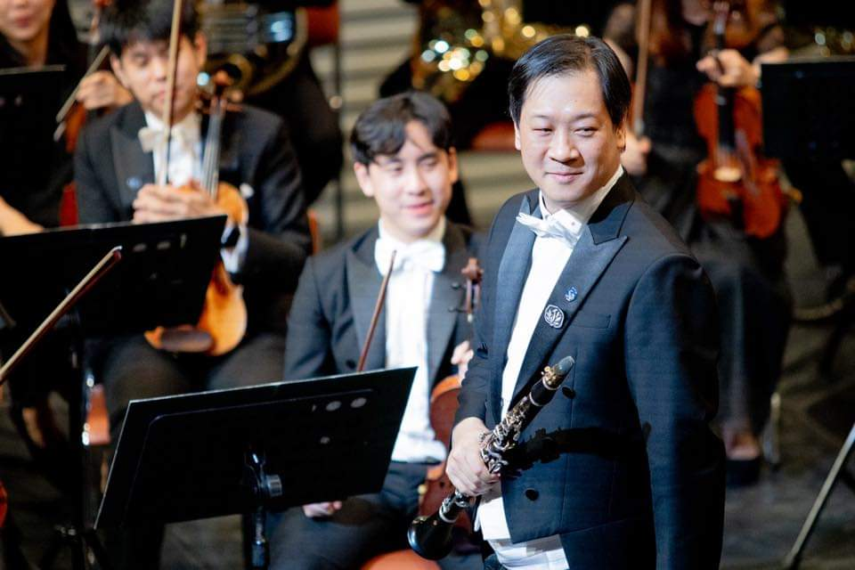
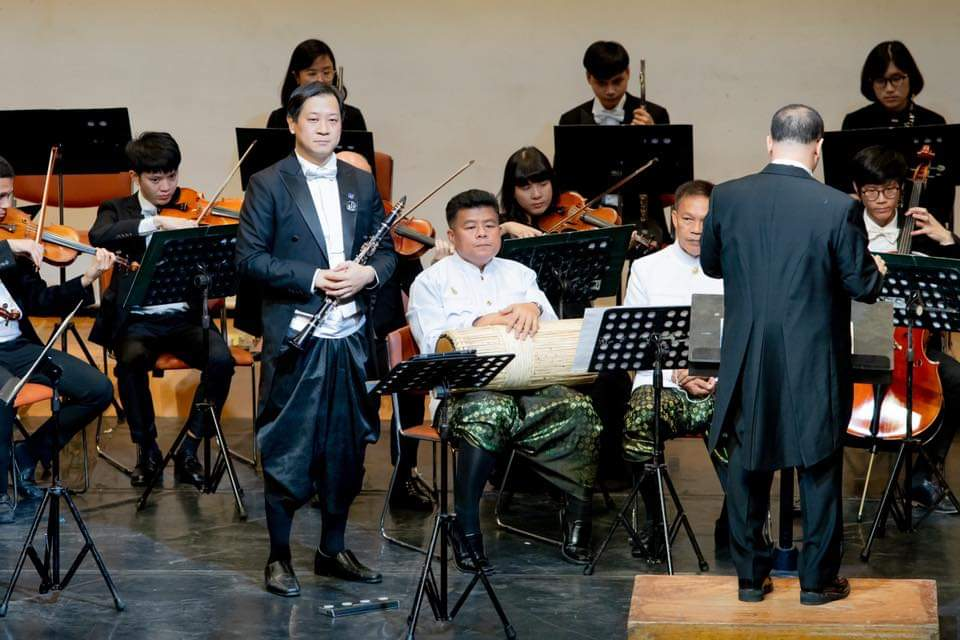

Composer Clarinetist Educator Researcher

Portrait, 2024More than two decades on the concert stage and in the classroom — a life lived across disciplines that listen to one another.
Dr. Yos Vaneesorn is a Thai composer, clarinetist, educator, and researcher.
As both a soloist and orchestral musician, he has performed in Thailand and abroad.
The portfolio you are about to explore is offered in the same spirit — let the work reveal itself to you.
From homophonic classical forms through to the post-tonal world of Webern, Berg, Bartók, and Stravinsky.
Writing for the modern symphonic orchestra — from the first exercise to the full score.
Weekly private instruction for undergraduate clarinettists — tone, repertoire, and orchestral excerpts.
A senior-year reading seminar on musical idea, character, proportional weight, and the copyist's discipline.

Orchestration is often taught as a catalogue of instruments. I teach it — and practise it — as the art of writing for a room.
My compositions draw on Thai ceremonial material and set it alongside the concert hall — not in fusion, but in conversation.

“I want every phrase to breathe — not only in the lungs of the player, but in the listener.”
Reading the structural logic of twentieth-century works through idea, character, and proportional weight.
Not fusion, but conversation — ceremonial Thai material beside the orchestra, each keeping its accent.
Where does the composer's hand remain when generative tools write at the speed of thought?

Music is not the sum of its parts. It is the attention we pay to how they arrive — in time, in a room, in the ear of someone who came to listen.Yos Vaneesorn · from teaching notes